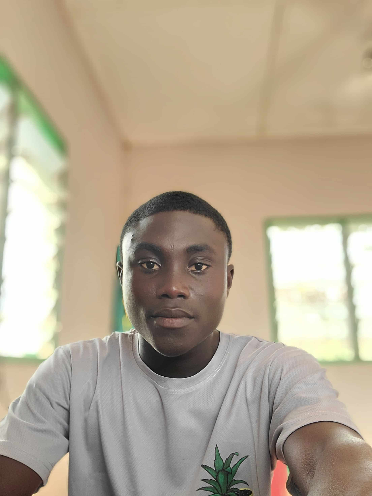

Gabriel Awushie-Tetteh | WDD 130

Hello! My name is Gabriel Awushie-Tetteh. I am a student navigating university-level coursework while balancing my daily work life. I am deeply passionate about technology and dedicated to developing my capabilities as a front-end web developer. Through my current studies in web design and development, I am mastering HTML, CSS, and programming logic to build clean, responsive, and user-friendly websites. My goal is to continually sharpen my technical skills, solve complex layout challenges, and create impactful digital experiences as I work toward becoming a professional software developer.